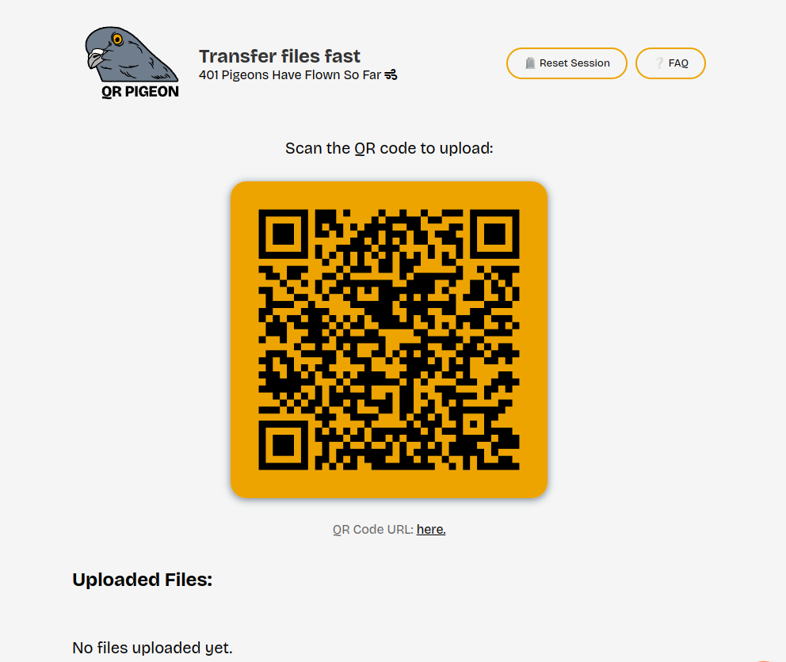

🖥️
Ayden Diel
Hi! I'm a developer from Massachusetts, and currently a Computer Science undergrad student at UMass
Boston. Previously, I was a SWE intern at Fidelity
- About
- Work Experience
- Portfolio
- Blog
- Resume
- Contact Me
About Me
I love building tools that makes peoples' lives easier, and I love learning new skills. I started coding when I was
12, and since then, seeing people use the things that I create has never gotten old :-)
In my free time, I like to read articles on Hacker News, read books,
draw, lift weights, learn languages, and contribute to open source!
Stuff I Like to Use
- 🐍 Python - My go-to for any experiments or proof-of-concept app ideas
- 📜 TypeScript/JavaScript - For anything on the web
- I've had a lot of work experience with Next.js, React, and
Angular
- Fun fact, I started learning JavaScript when I was 11 in 2015!
☕ Java - Very nice for building robust backends and APIs
⚙️ C & C++ - For low level stuff, CUDA programming, and Arduino
projects
🐧 Linux (Ubuntu) - I seriously love Linux ❤️
✏️ Neovim
- My favorite
text
editor / IDE!
Work Experience
Portfolio
Python Flask JavaScript Linux Github Actions Azure
QRPigeon is a tool for transfering files quickly from a mobile device to a PC as fast as possible. Here are the
steps for using it:
- Pull up the website on a desktop device
- Scan the QR code on your desktop screen with a mobile device
- On your mobile device, select the images or PDFs that you'd like to send to your desktop
- Look back at your desktop, and see the file from your mobile device appear automagically™
- Click the "Download" button on any item on the desktop, and you're done!
